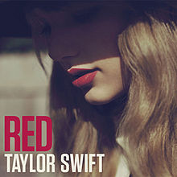
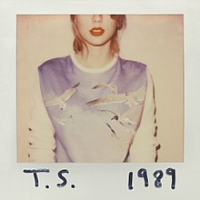
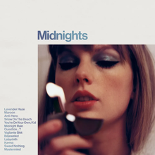

Discografia da Taylor Swift
Taylor Swift (self-titled)
Taylor Swift é o álbum de estreia homônimo da cantora e compositora estadunidense Taylor Swift, lançado através da Big Machine Records em 24 de outubro de 2006.

Fearless
Fearless é o segundo álbum de estúdio da artista musical americana Taylor Swift, lançado no dia 11 de novembro de 2008 através da Big Machine Records.
Speak Now
Speak Now é o terceiro álbum de estúdio da cantora e compositora estadunidense Taylor Swift, lançado no dia 25 de outubro de 2010 através da Big Machine Records.
Red
Red é o quarto álbum de estúdio da cantora e compositora estadunidense Taylor Swift, lançado pela gravadora Big Machine Records no dia 22 de outubro de 2012.
1989
1989 é o quinto álbum de estúdio da artista musical americana Taylor Swift, lançado em 27 de outubro de 2014, através da gravadora Big Machine.
Reputation
Reputation (estilizado em letras minúsculas) é o sexto álbum de estúdio da artista musical americana Taylor Swift, lançado em 10 de novembro de 2017, através da gravadora Big Machine.
Lover
Lover é o sétimo álbum de estúdio da artista musical americana Taylor Swift. O seu lançamento ocorreu em 23 de agosto de 2019, através da Republic Records.
Folklore
Folklore (estilizado em letras minúsculas) é o oitavo álbum de estúdio da artista musical estadunidense Taylor Swift, lançado em 24 de julho de 2020 pela Republic Records.
Evermore
Evermore (estilizado em letras minúsculas) é o nono álbum de estúdio da cantora e compositora estadunidense Taylor Swift. O seu lançamento ocorreu em 11 de dezembro de 2020, através da gravadora Republic Records
Midnights
Midnights é o décimo álbum de estúdio da cantora e compositora estadunidense Taylor Swift, lançado em 21 de outubro de 2022, através da Republic Records.
